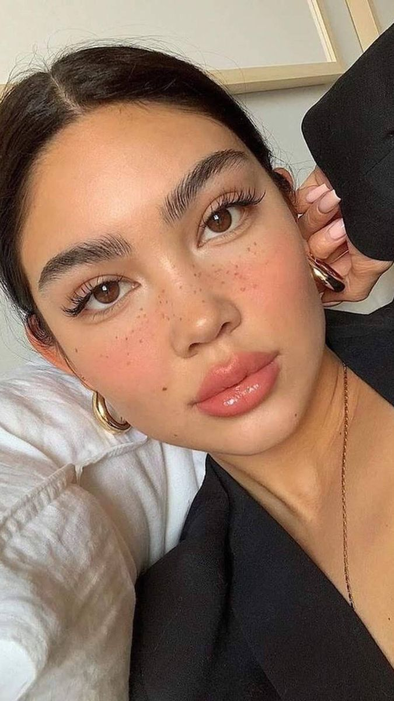
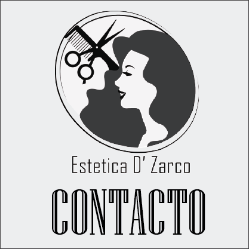
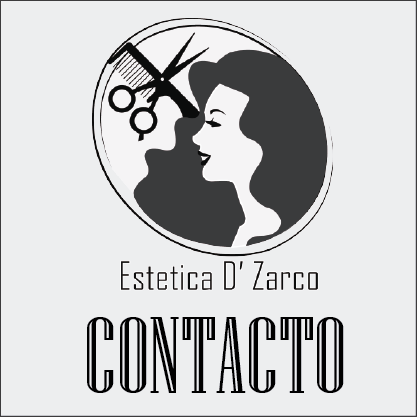

SERVICIOS
Cortes para Dama
Despunte
Te retiramos las puntas abiertas de tu cabello a tijera. De 2 a 5 dedos, dependiendo el largo de tus puntas.
$150.00
$150.00
Corte
Te realizamos un corte a partir de 5 dedos y hasta 10, dependiendo de el largo de tu cabello.
$190.00
$190.00
Make Over
Te realizamos un corte a partir de 8 dedos y hasta 15, dependiendo de el largo de tu cabello.
$240.00
$240.00
Maquillajes

Natural
Si lo tuyo no es un maquillaje extravagante, te recomendamos un maquillaje más casual.
$190.00
$190.00
Para Fiesta
Si te encanta destacar o crees que la ocación lo amerita, el maquillaje de fiesta es para tí.
$250.00
$250.00
Fantasía
Te recomendamos el maquillaje fantasía para el día de muertos o algún otro evento.
$180.00 precios varian
$180.00 precios varian
Tintes para Cabello
Cabello corto
Para las damas con cabello corto el costo es menor debido a la menor cantidad de producto aplicado a su cabellera.
$400.00
$400.00
Cabello mediano
Las damas con un cabello de longitud mediana el costo de su pintado de cabello será el precio normal o promedio.
$500.00
$500.00
Cabello Largo
A todas las damas con cabello largo se les aplica más producto, aumentando así el costo.
$600.00
$600.00


 

©2024. Derechos reservados.
Desarrollado por: Valeria Silva Gonzalez. Matricula:02113162. Grupo:607
Plantel Nueva Tijuana